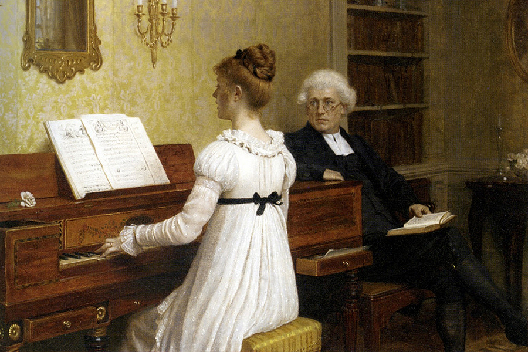
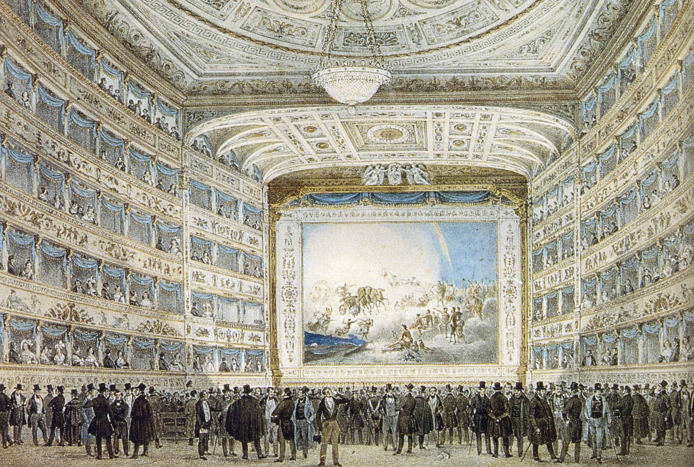
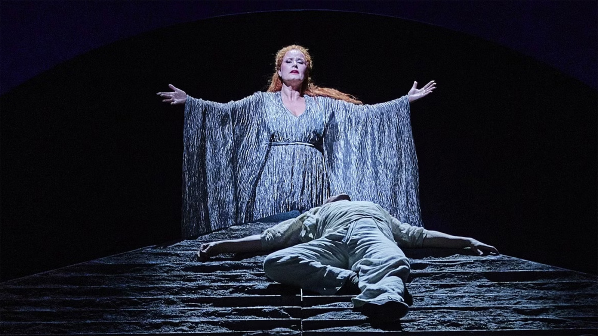
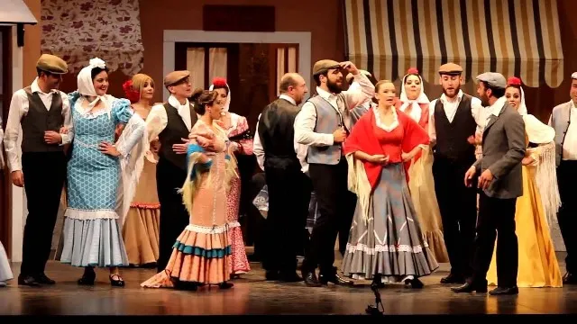

Lied intimista y la ópera épica
La música vocal alcanzará un gran desarrollo en este periodo, especialmente con el género de la ópera, la zarzuela en España, y otros más íntimos, como el lied.
El lied o canción romántica
Un importante género vocal del Romanticismo fue el lied, en el que los músicos encontraron un vehículo ideal para la expresión de los sentimientos. En la audición relacionada podrás apreciar una melodía cantada (en alemán) acompañada de piano y sobre un texto poético. Se trata de un lied, género que combinaba la obra de los grandes poetas románticos (Goethe, Heine, etc.) con la expresividad de la melodía cantada y acompañada por el piano, instrumento predilecto del Romanticismo.
| El lied romántico es una poesía cantada y generalmente acompañada del piano. |

La canción romántica nacerá y se desarrollará en Alemania, y por eso a este género se le ha llamado lied (‘canción’ en alemán). Franz Schubert (1797-1828) fue el primer gran compositor de lieder. El heredero de Schubert fue Robert Schumann (1810-1856), compositor que cuidó especialmente el acompañamiento del piano. El lied que has escuchado pertenece a la colección Los amores de un poeta, op. 48, de Schumann, sobre versos del poeta romántico Heinrich Heine.
La ópera romántica y la zarzuela en España
Durante el Romanticismo, la ópera será un género muy apreciado por los compositores. Los países intentaron crear un estilo de ópera propio. Así, Italia destacó con compositores como Rossini y Verdi influenciados por el bel canto, mientras que en Alemania sería Wagner el compositor más destacado, creador del drama musical y del uso del leitmotiv.
En España se buscará también una ópera con estilo propio por parte de algunos autores, pero finalmente el género que se impondrá a finales del s. XIX y principios del XX será la zarzuela, con melodías y danzas provenientes del folclore español. En este género destacan compositores como Tomás Bretón, Ruperto Chapí, Federico Moreno Torroba, Pablo Sorozábal y Jacinto Guerrero. Como ejemplos de zarzuelas famosas podemos citar Luisa Fernanda, de Moreno Torroba, y La rosa del azafrán, de J. Guerrero.
 |
 |
 |
Recuerda que en la ópera se distingue entre los recitativos y las arias. Mientras que los recitativos son diálogos que desarrollan la acción, las arias son canciones más elaboradas que suelen expresar sentimientos de los personajes. El equivalente de las arias en la zarzuela serán las romanzas.
ESCUCHAMOS PERO NO JUZGAMOS: LIED Y ÓPERA ROMÁNTICA
A continuación vas a escuchar cuatro obras. Escúchalas y responde a las preguntas.
🎧 Audición 3
- ¿Qué nos ayuda a saber que estamos escuchando un Lied?
- ¿Qué tipo de textura emplea?
🎧 Audición 4
G. Verdi - La Traviata - Libiamo ne lieti calici
- ¿Es ópera italiana, alemana o zarzuela española?
- ¿Se trata de un recitativo, un aria o un dúo con coro? ¿Por qué?
🎧 Audición 5
R. Wagner - La Valquiria - Cabalgata de las valquirias
- ¿Es ópera italiana, alemana o zarzuela española?
- ¿Es un aria, recitativo, coro o una pieza instrumental? ¿De qué pieza instrumental se trata?
🎧 Audición 6
Francisco Asenjo Barbieri - El barberillo de Lavapiés - Dúo de Paloma y Lamparilla 'No seas tirana'
- ¿Es ópera italiana, alemana o zarzuela española?
- ¿Qué instrumento nos hace reconocer que está inspirada por el folklore español?